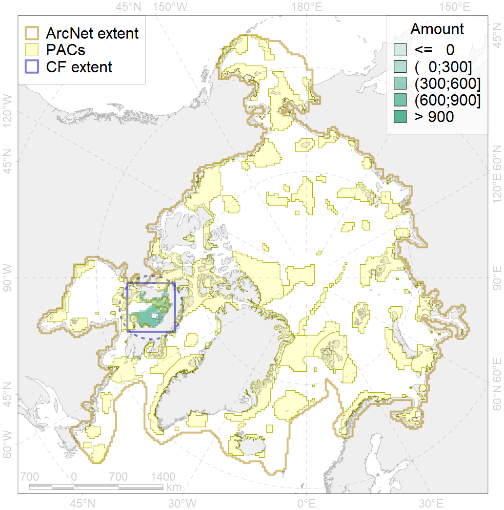

7138

| CF code | 7138 |
| CF name | III.1.1.5. Foxe Basin shallow shelf |
| Time Period | At least last 100 years |
| Source(s) | Harris et al., 2014; Carmack, Wassmann, 2006 |
| Seasonality | 1-12 |
| Depth Horizon | Sea floor |
| Methodology | Data obtained from the literature |
| Use Restrictions | Open access |
| Author Name | V. Spiridonov, W. Merritt |
| Notes | |
| Scenario’s Target | 0.091808 |
| Target Achievement | 0.270 (Scenario: 294.1%) |
| PAC | Share of the Total Amount within the PAC | Share of the Target Achievement for the ArcNet | PAC’s Contribution to the Target Achievement |
|---|---|---|---|
| 65 | 0.2%0.2% | 1.2%1.2% | 0.4%0.4% |
| 66 | 21.0%21.8% | 201.4%208.5% | 68.5%70.9% |
| 67 | 0.3% | 2.4% | 0.8% |
| 73 | 2.3% | 25.0% | 8.5% |
| 74 | 1.2%1.8% | 8.4%15.0% | 2.9%5.1% |
| inner | 24.9%26.3% | 238.4%252.1% | 81.1%85.7% |
| outer | 75.1%85.0% | 55.7%145.5% | 18.9%49.5% |
| † supplement values are for area consistence whereas principal values are for Accenter compatible gridded stats |